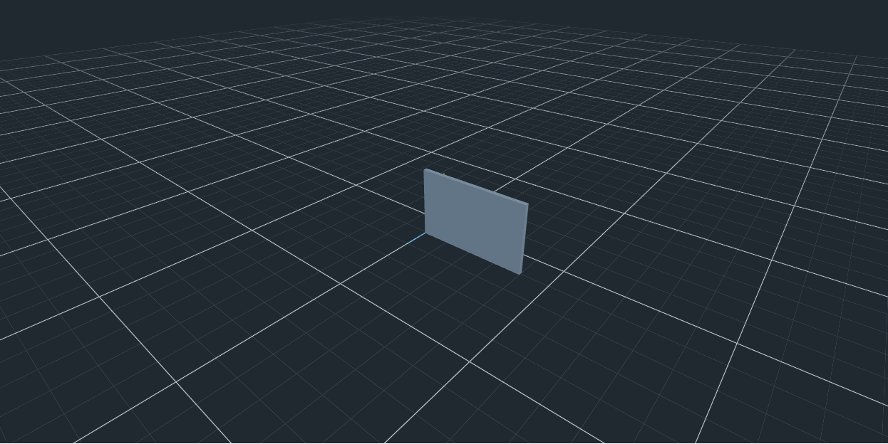

01Planned
Create a model
Import a floor plan or define building elements manually.
Our project focuses on converting floor plans into interactive 3D building models. In this sprint, we worked on the basic 3D environment and wall interaction.
Sprint 1 · 3D Visualization Prototype
We want to make it easier to visualize buildings from floor plans and eventually analyze indoor conditions.
Import a floor plan or define building elements manually.
Explore the building and interact with walls, rooms, and other elements.
Simulate conditions such as temperature, ventilation, and CO₂ levels.
During Sprint 1, we focused on getting a basic 3D scene running and making our first wall interactive.

Set up the viewport, ground grid, lighting, and camera controls for rotating, panning, and zooming.
Created a wall using typed data, with selection highlighting and dimension display.
Added keyboard movement and controls to rotate or tilt the wall in 1° increments.
Now that the basic 3D environment works, we can start building more complex structures.
Select and move the wall using basic 3D navigation and interaction.
Generate a floor and four connected walls, with consistent room dimensions and wall positions. Extend interaction to multiple elements.
Later project goals Floor-plan recognition and environmental simulation.
These are the main tools we used for the Sprint 1 prototype and what each one does.
Builds the interface around the 3D viewport, including wall selection and dimension details.
Defines wall data and helps catch errors while developing the prototype.
Three.js renders the 3D scene; React Three Fiber lets us create and control it using React components.
Runs the development version locally and builds the frontend for deployment.
Presentation: This slide deck is made with Reveal.js and also uses Vite.